Quay lại danh sách dự án
CASE STUDY · SAINT L’BEAU · 09/2021–01/2023
Creator Affiliate & Social Commerce
Integrated Social Content, Creator Affiliate Marketing & Marketplace Activation
Giúp những sản phẩm chăm sóc cá nhân còn mới trở nên dễ hiểu hơn thông qua product education và demonstration-led content; sau đó kết nối creator reviews với Shopee Affiliate, TikTok Shop và các chương trình marketplace để hỗ trợ traffic, follower growth và chuyển đổi.
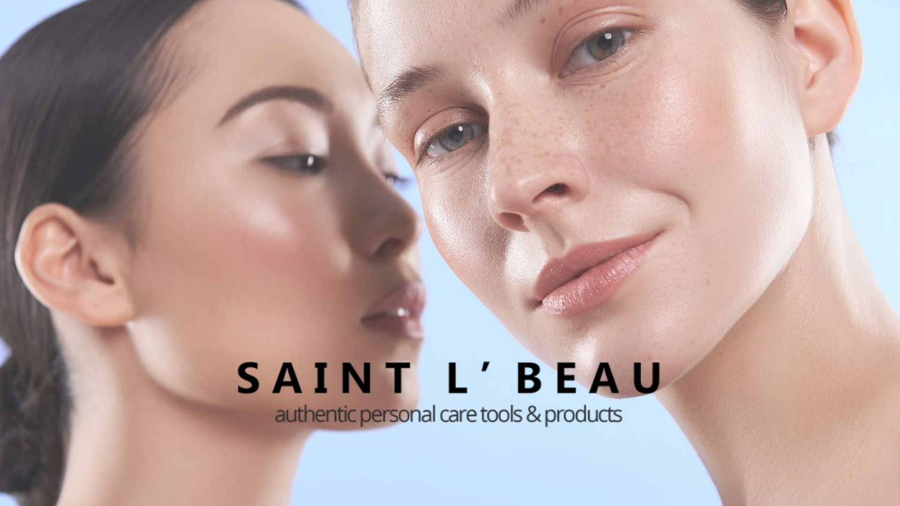
01 · PROJECT IMPACT
Nội dung, creator và marketplace cùng vận hành trong một hệ thống
Creator metrics được tổng hợp từ các bài đăng lưu trữ. Kết quả marketplace dựa trên báo cáo nội bộ trong giai đoạn dự án; mức tăng trưởng doanh thu là tổng kết quả trên Shopee và Tiki, không được quy hoàn toàn cho một hoạt động riêng lẻ.
02 · BUSINESS CONTEXT
Từ sản phẩm còn xa lạ đến trải nghiệm sử dụng dễ hình dung
Saint L’Beau phân phối các sản phẩm chăm sóc cá nhân và wellness nhập khẩu tại Việt Nam, gồm thiết bị chăm sóc da Pebble Fleur, máy tăm nước Iris Care, thiết bị chăm sóc cá nhân tmrbae và ToningMe Tea. Vì nhiều sản phẩm còn mới với người tiêu dùng, thương hiệu cần một hệ thống nội dung có thể giải thích rõ lợi ích, minh họa cách dùng và tạo social proof trước khi dẫn người xem đến điểm bán.
- High education barrier: Người mua cần hiểu rõ use case, cách sử dụng và điểm khác biệt của sản phẩm.
- Creator consistency: Nội dung cần tự nhiên nhưng vẫn đúng key message, product claim và timeline.
- Reach-to-conversion gap: Lượt xem và tương tác không tự động chuyển thành traffic hoặc đơn hàng.
- Limited awareness budget: Thương hiệu phải xây visibility và trust mà không dựa vào paid media quy mô lớn.
03 · PROJECT OBJECTIVES
Ba mục tiêu nối liền nhận thức, niềm tin và hành động mua
Product Education
Giúp người tiêu dùng hiểu use case, lợi ích và điểm khác biệt của những sản phẩm chăm sóc cá nhân còn mới.
Credibility & Social Proof
Xây dựng niềm tin thông qua demonstration, hướng dẫn thực tế và creator reviews phù hợp với từng nhóm khách hàng.
Content-to-Commerce
Kết nối social và creator content với ưu đãi marketplace để hỗ trợ traffic, follower growth và sales conversion.
04 · STRATEGIC APPROACH
Năm lớp triển khai từ nền tảng nội dung đến marketplace
Chuẩn hóa product information, key messages, hình ảnh và nội dung hướng dẫn giữa social, website và marketplace.
Lựa chọn creator theo audience fit và content style; xây affiliate brief, key message, timeline và tiêu chí review.
Ưu tiên hands-on review, product demonstration và problem–solution scenarios để sản phẩm trở nên dễ hiểu.
Kết nối creator content với Shopee affiliate links hoặc TikTok Shop product carts và chương trình voucher phù hợp.
Phối hợp với Key Account Managers, cập nhật promotional assets, product listings và theo dõi kết quả bán hàng.
05 · AFFILIATE WORKFLOW
Một quy trình minh bạch từ creator selection đến performance monitoring
Creator SelectionProduct SeedingAffiliate BriefContent ReviewShopee Link / TikTok CartPerformance Monitoring
Creator nhận sản phẩm để trải nghiệm và thực hiện nội dung review, sau đó nhận commission dựa trên đơn hàng được ghi nhận qua Shopee Affiliate hoặc giỏ hàng TikTok Shop. Mô hình này được mô tả là product-seeded affiliate collaboration, không phải paid booking thuần túy.
06 · SELECTED CREATOR COLLABORATIONS
Affiliate content tạo social proof ở quy mô thực tế
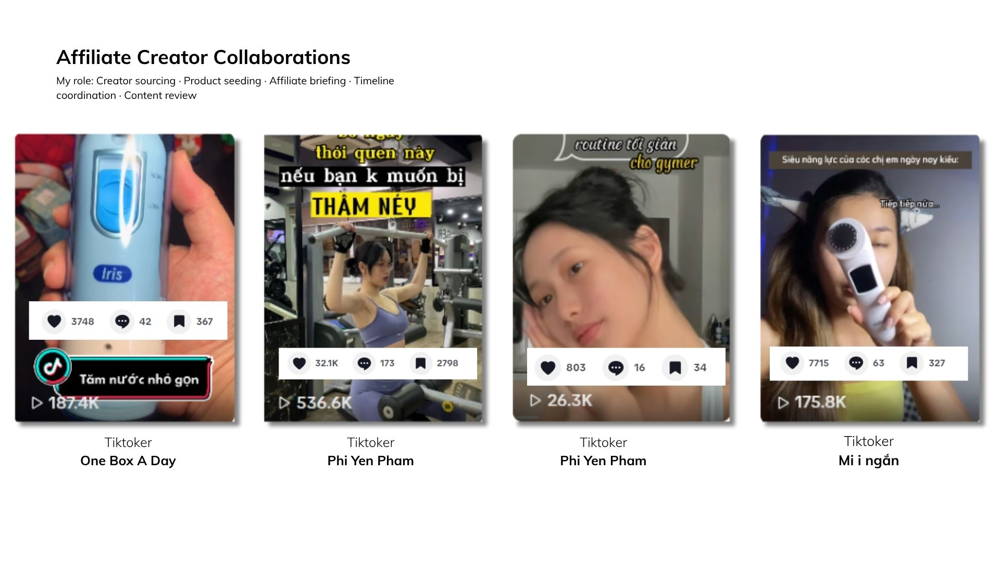
500K views / 7 days
Phi Yến Phạm — Affiliate review cho Pebble Fleur 2, trong đó ghi nhận 200K views trong ngày đầu.
100K views / 1 day
One Box A Day — Affiliate review và product demonstration cho máy tăm nước Iris Care.
100K views / 1 day
Mi i ngắn — Selected affiliate product demonstration cho Pebble Fleur 2.
07 · MARKETPLACE IMPACT & OPERATIONS
Nội dung được nối với storefront, campaign và ưu đãi bán hàng
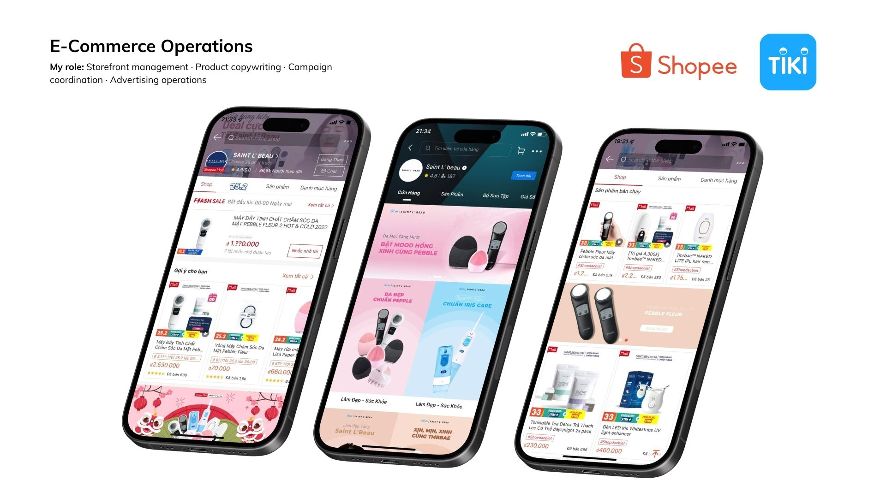
Performance figures are based on archived internal marketplace reports. Absolute revenue figures remain confidential.
08 · CONTENT SYSTEM
Từ content calendar đến cross-channel execution
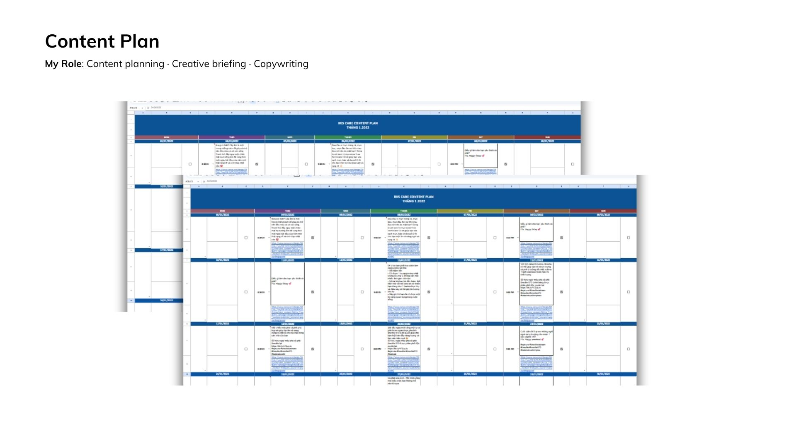
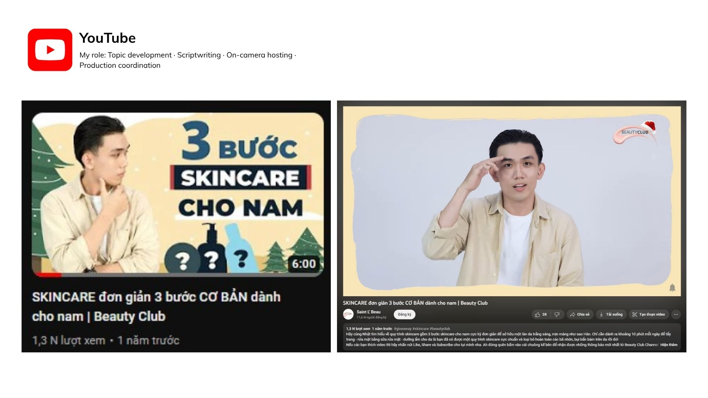
09 · SELECTED OUTPUT · IRIS CARE
Product communication từ social content đến expert-led film
Workstream Iris Care kết hợp nội dung giáo dục sản phẩm trên social media với một phim dài có chuyên gia giải thích vấn đề chăm sóc răng miệng và minh họa use case của máy tăm nước.
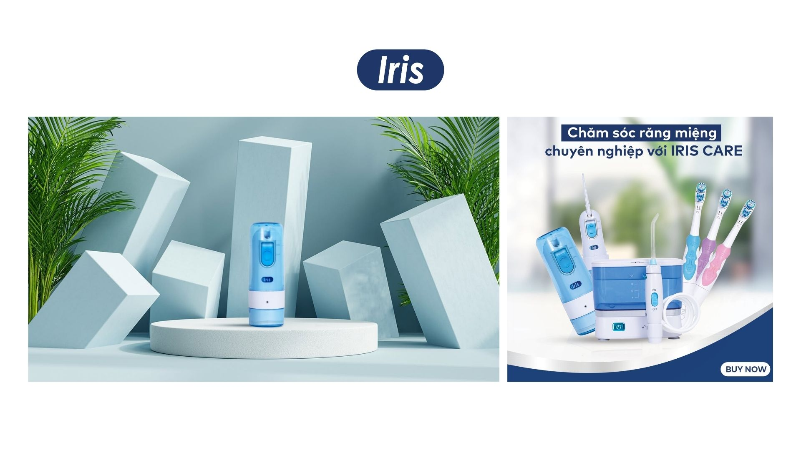
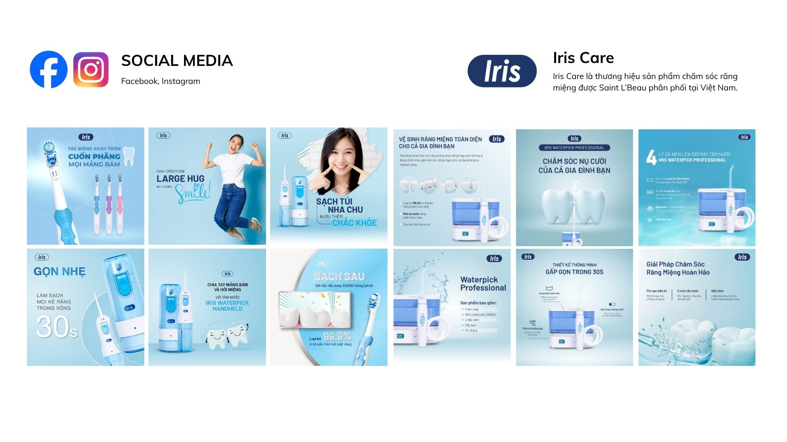
Iris Care Water Flosser
Phim giáo dục dài năm phút giải thích các vấn đề chăm sóc răng miệng, giới thiệu use case và demonstration sản phẩm trong sinh hoạt hằng ngày.
My contribution: Content direction · Scriptwriting · Production planning · On-set coordination · Review and feedback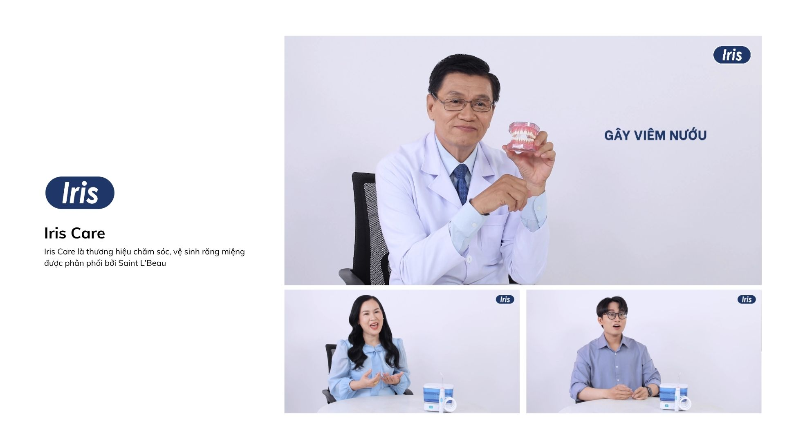
Expert and User Perspectives
Cấu trúc video kết hợp phần giải thích của chuyên gia, tình huống người dùng và cảnh demonstration sản phẩm.
10 · SELECTED OUTPUT · PEBBLE & TMRBAE
Hai visual systems cho hai nhóm sản phẩm khác nhau
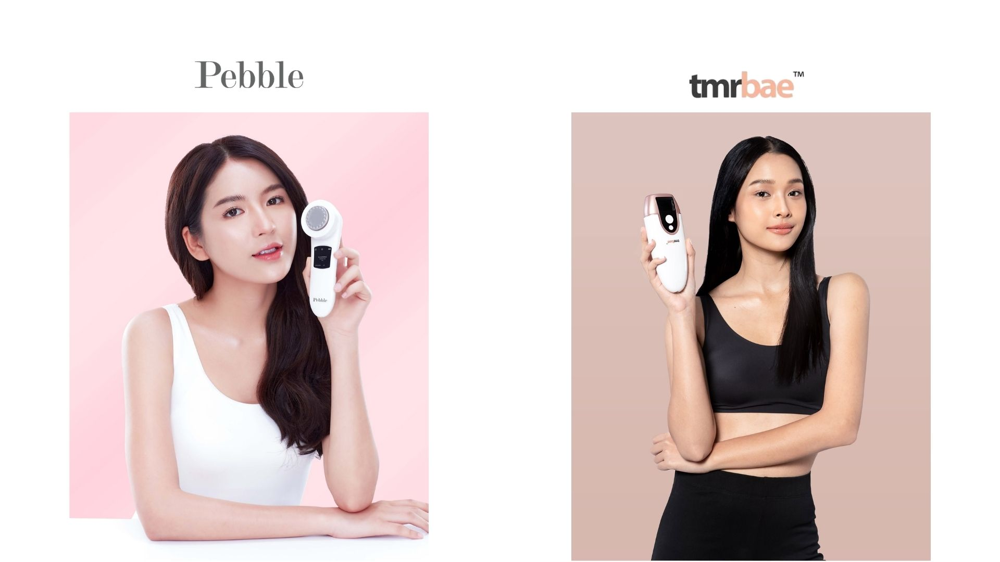
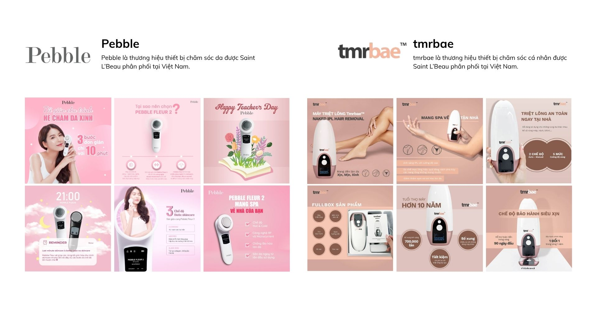
11 · SELECTED OUTPUT · TONINGME TEA
Hai video tiêu biểu từ product video series
Trong số các video đã thực hiện cùng production team, case study chỉ giữ lại hai bản tiêu biểu — cắt trái cây và trà sữa — để thể hiện cách khai thác hai ngữ cảnh nội dung khác nhau mà không làm trang trở nên dàn trải.
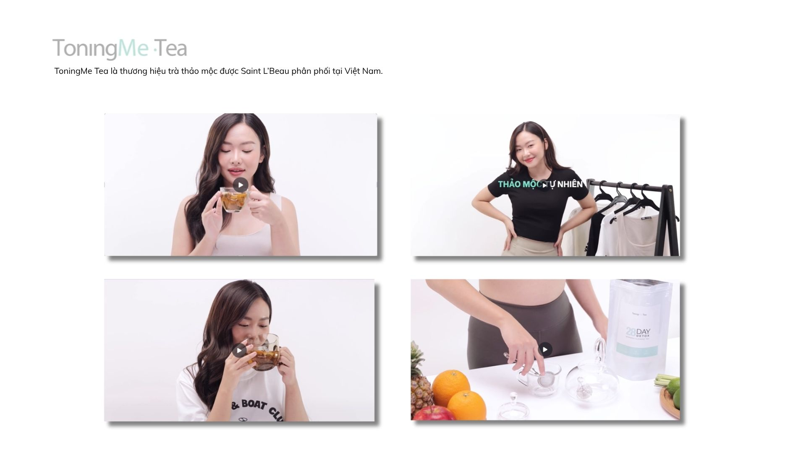
Cắt trái cây
Video lifestyle đặt sản phẩm trong bối cảnh chuẩn bị trái cây và đồ uống, kết hợp product visibility với nhịp kể chuyện gần gũi.
My contribution: Concept development · Scriptwriting · Production planning · Timeline coordination · Production reviewTrà sữa — phiên bản hài hước
Video ngắn sử dụng tình huống đời thường và tone hài hước để tạo điểm vào dễ tiếp cận cho thông điệp sản phẩm.
My contribution: Concept development · Scriptwriting · Production planning · Timeline coordination · Production review12 · PRODUCTION MANAGEMENT
Kịch bản, ngân sách và timeline được quản lý trong cùng một quy trình
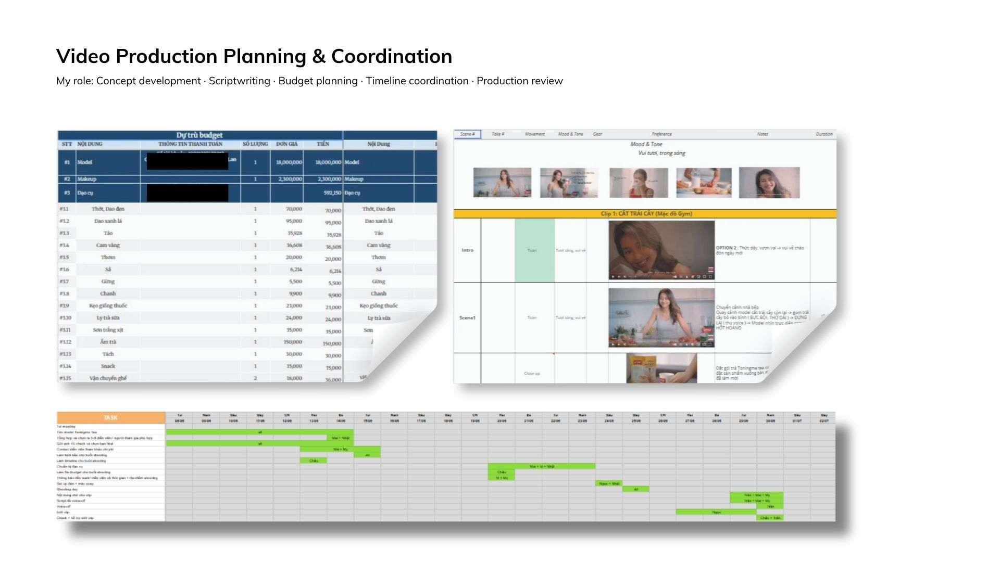
Tên cá nhân và các thông tin sản xuất nhạy cảm trong tài liệu được giữ nguyên trạng thái che để bảo vệ dữ liệu nội bộ; các phần còn lại chỉ được sử dụng như bằng chứng về cấu trúc kế hoạch và phạm vi phối hợp.
13 · MY ROLE
Junior Marketing Executive
- Lập kế hoạch và phát triển nội dung cho Facebook, Instagram, YouTube và website.
- Chuyển yêu cầu campaign thành creative direction, design brief và social assets.
- Phát triển concept, script và phối hợp sản xuất product demonstrations, short-form videos và YouTube content.
- Tìm kiếm và đánh giá TikTok creators; quản lý product seeding, affiliate brief, timeline, feedback và quality control trước khi đăng.
- Phối hợp với Key Account Managers của Shopee, Lazada và Tiki để đăng ký campaign và cập nhật promotional assets.
- Tối ưu product listings, product imagery và website content để tăng tính nhất quán và hỗ trợ search visibility.
14 · KEY LEARNING
Social commerce cần nhiều hơn một video có lượt xem cao
Education reduces friction. Product content phải giúp người xem hiểu cách dùng trước khi yêu cầu họ mua.
Creator fit matters. Audience relevance và content style quan trọng không kém follower count.
Operations complete the journey. Product listing, voucher, affiliate link và storefront phải sẵn sàng để chuyển attention thành action.